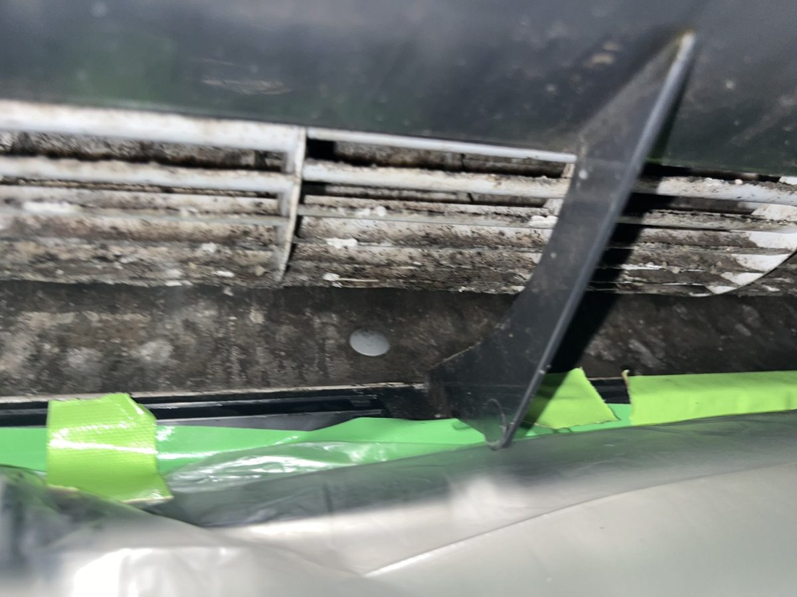
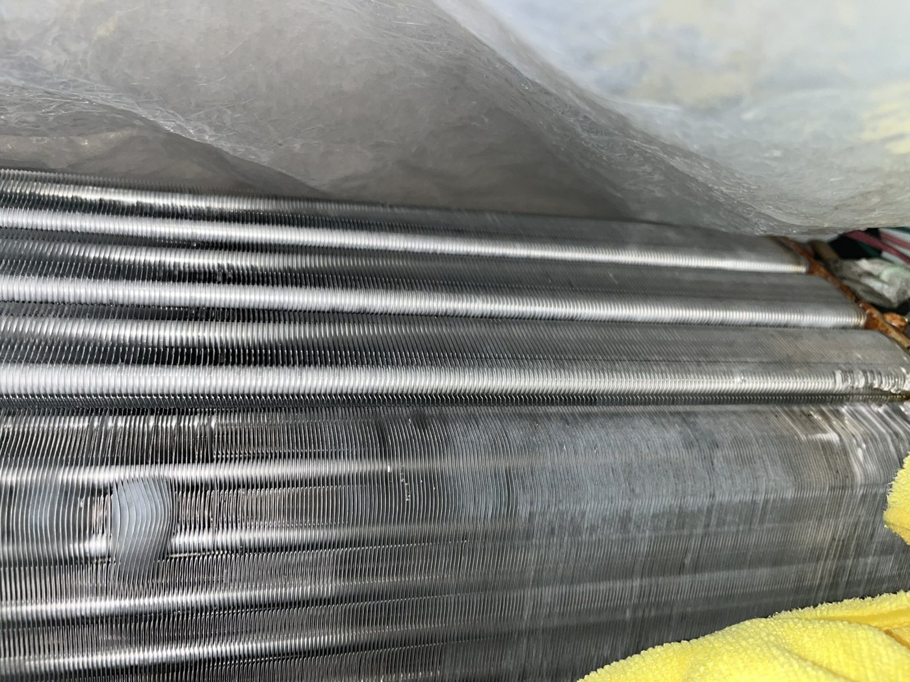
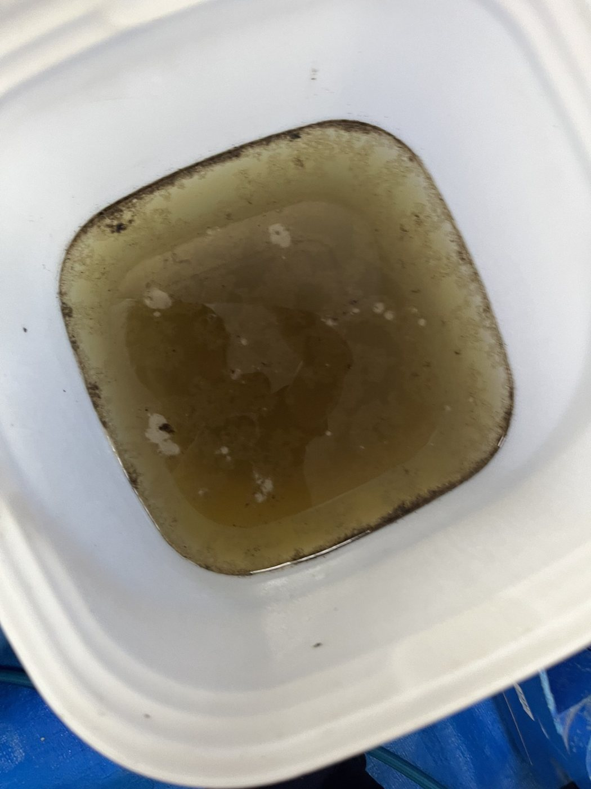
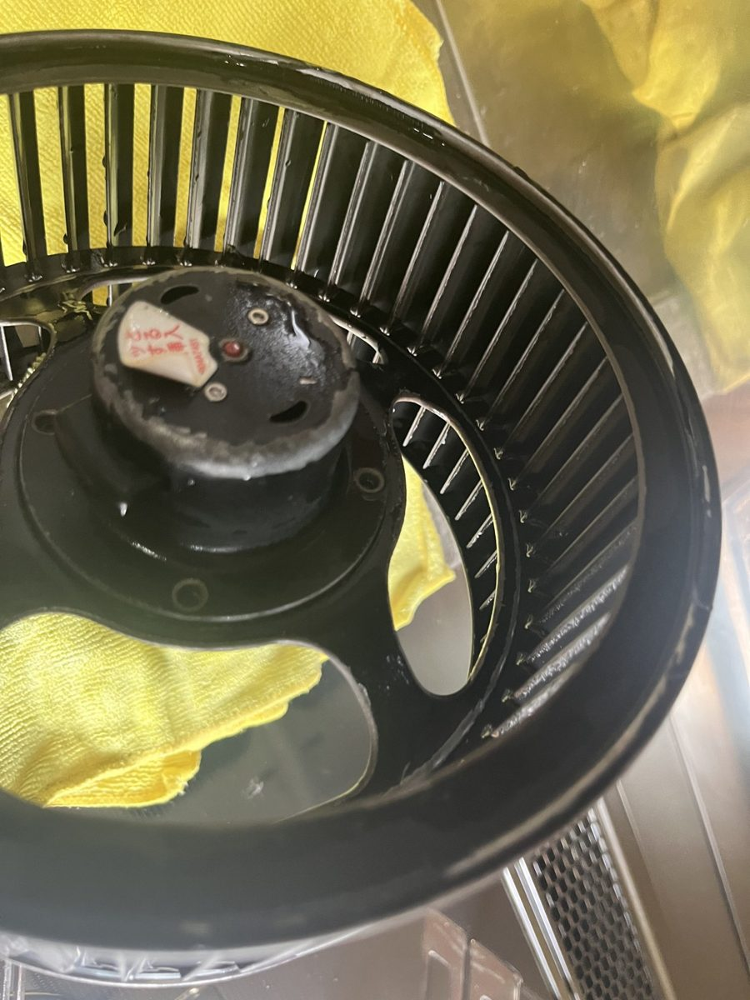
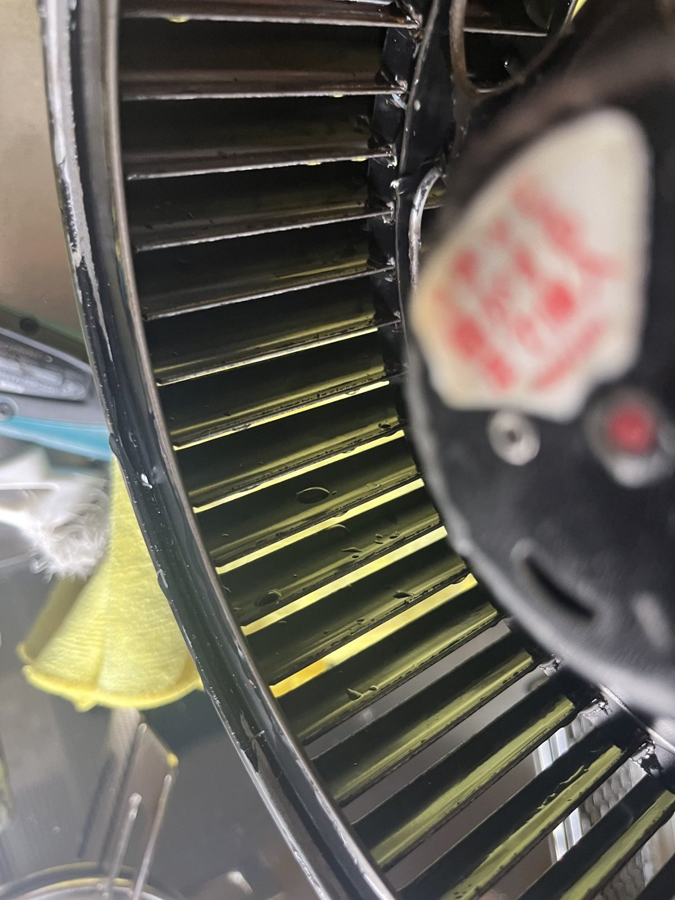

「留守中もエアコンはずっとつけてください。」
出典 栃木県動物愛護指導センター「犬は暑さに弱い 早めの暑さ対策を！」（2024年5月7日）
この家でいちばん長く、エアコンの風を浴びる家族です。
夏の留守番。人は昼間、家にいません。この子は床の近くで、エアコンの風を1日中浴びています。
ペットフード協会の2025年の調査では、猫の82.3%が「室内のみ」で暮らしています。犬も「散歩・外出時以外は室内」が65.3%。この子の空気は、家の空気です。出典 一般社団法人ペットフード協会「2025年 全国犬猫飼育実態調査」主要指標サマリー
「犬や猫などの動物は、密な毛におおわれており、体温調整が得意ではありません。加えて、人に比べて体高が低く、地面からの熱を受けやすい環境下にいます。」出典 環境省 報道発表「『防ごう！ペットの熱中症』ペットの熱中症予防に関するポスターの作成について」（2025年6月20日）
人の目の高さの温度と、床の温度は違います。温湿度計は、この子の寝床の高さに1つ。環境省は「室内であっても適切な温度・湿度管理をすること、加えてペットが自ら快適な場所に移動できるような環境を整えることが必要です。」と書いています。
| 目安 | 出どころ | |
|---|---|---|
| 夏の室温 | 25〜28℃ | ダイキン（一級建築士監修） |
| 冬の室温 | 20〜23℃ | 同 |
| 湿度 | 50〜60%程度 | 同 |
| 家の中の温度差 | 4℃以上つくらない | 同 |
| 寝床の場所 | 窓際から約1m離す | 同 |
湿度の上限は、東京都の指針がはっきり書いています。「湿度が60％を超えると、カビやダニが発生しやすくなります。」出典 東京都「健康・快適居住環境の指針」指針No.4 湿度管理
毛の手入れは、まず窓を閉めるところから。東京都の資料の一文です。
「動物の毛や羽の手入れ、ケージの清掃等を行う場合は、必ず窓を閉めるなどして、毛や羽等の飛散を防止すること。」出典 東京都保健医療局「集合住宅における動物飼養モデル規程」解説
東京都の指針は、ペットのアレルゲンを減らす場所として、寝室を名指ししています。
「ペットを飼育する場所は限定しましょう。床はフローリングが望ましく、ペットアレルギーのある方は寝室にはペットを入れないようにしましょう。」出典 東京都「健康・快適居住環境の指針」指針No.33 ペットアレルゲン
この子が来ると、家で料理をする回数が増える家が多いようです。換気扇の手入れは、メーカーがこう書いています。
「キッチンのお手入れで一番やっかいなのがレンジフード。面倒がって放っておけば、手に負えない汚れになり換気機能も低下します。3カ月に1度くらいはお手入れを。」出典 パナソニック 住まいの設備と建材「レンジフード | キッチンのお手入れ」
もう1つ、火のそばの話。NITE（製品評価技術基盤機構）の資料です。
「2013年度から2022年度までの10年間にNITE（ナイト）に通知された製品事故情報では、ペットによる事故は61件発生し、うち約9割（61件中54件）が火災に至っています。飼い主の外出中に家で留守番をしていた犬や猫がこんろの操作ボタンやスイッチを押したことによる事故が多い他、ペットが電気製品に排尿したり、電源コードをかみついたりしたことによる事故も発生しています。」出典 NITE「“もふもふプッシュ”にご用心～「ペットによる火災事故」を防ぐポイント～」（2024年3月28日）
冒頭の「留守中もエアコンはずっとつけてください。」に戻ります。つけっぱなしの中で何が起きているか、メーカーが書いています。
「冷房や除湿（ドライ）運転後は、室内機の内部が結露し、ジメジメした状態になります。」出典 ダイキン FAQ「内部クリーンとは」
「そのままで放置すると、カビやニオイの原因となる」とも。パナソニックと三菱電機も、同じことを書いています（末尾の出典）。
留守番の家のエアコンは、
乾く暇がない。
そして日本アレルギー学会の資料は、ペットの抗原（アレルゲン）は「家の隅にいても、家中に拡散して存在する」と書いています。家の空気を回しているのは、エアコンです。出典 アレルギーポータル（日本アレルギー学会・厚生労働省補助事業）「接触皮膚炎」
ここまでの数字を、1枚に。冷蔵庫に貼る用です。
| どこ | どのくらい | 出どころ |
|---|---|---|
| ブラッシング | できれば毎日。少なくとも2〜3日に1回 | アニコム（獣医師監修） |
| 床 | 集めてから掃除機。3日に1回、1㎡に20秒 | アニコム／東京都 指針No.31 |
| この子のタオル・敷物 | 頻繁に洗って、天日に | 東京都 モデル規程解説 |
| 布団 | 週に1回、表と裏に掃除機 | 東京都 指針No.31 |
| エアコンの フィルター | 2週間に1回。 季節の変わり目は必ず | ダイキン／東京都 指針No.5・No.32 |
| 空気清浄機の フィルター | 2週間に1回 | ダイキン／パナソニック |
| レンジフード | 3か月に1度。部品は35〜40℃で20〜30分つけ置き | パナソニック |
| 出かける前 | こんろの元栓、プラグ | NITE |
二に書いたとおり。東京都の資料は「必ず窓を閉めるなどして」。ベランダも同じです。
「ベランダでの食事、トイレ、ブラシかけは、臭気や毛が飛散するなど、近隣への迷惑になるので、日常の管理は室内で行うようにしましょう。」出典 東京都「健康・快適居住環境の指針」指針No.29 ペットとの生活
東京都の指針の言葉です。
「乳幼児、病人、ペットのいるところでむやみに使用しないようにしましょう。」出典 東京都「健康・快適居住環境の指針」指針No.28 殺虫剤・防虫剤など
同じく東京都の指針。
「直接掃除機をかけると、カビの胞子をまき散らすことになるので注意しましょう。」出典 東京都「健康・快適居住環境の指針」指針No.9 室内のカビ対策
メーカーの言葉です。
「市販の洗浄スプレーは、ご使用しないでください。」出典 ダイキン「エアコンのお手入れについて（ルームエアコン）」
手引きは、ここまでです。ここまでに書いたことは、全部、道具と時間があれば家でできます。
ここで、書いている私のことを。
私は江戸川区で、エアコンや換気扇を分解して洗っている、現場の者です。
ワンヒッター株式会社（江戸川区北葛西）。ここから先は資料ではなく、自分の目で見てきたものです。頼むかどうかは、読み終わってから決めてください。
「フィルターは2週間に1回、洗っています」。そう言われたお宅のエアコンの、吹き出し口です。

フィルターは入口の網です。奥の熱交換器と送風ファンには、フィルターを洗っても手が届かない。


1台分の水です。犬や猫のいる家では、ここに毛が絡んでいることがあります。
もう1か所。四の換気扇の、中のファンです。ふだん見えません。外すと、こうなっています。


レンジフードの中のシロッコファン。2026年8月、江戸川区。作業前。
油は、ほこりと毛を抱き込んで固まります。ここまでになると、つけ置きでは落ちない。外して、漬けて、削るしかない。そして油は、火のそばにあります。
「コンロやレンジフードに油脂が付いていると、着火して火災になる危険があります。」出典 東京消防庁「キッチンの火災を防ぐ」
エアコンの熱交換器と送風ファン、換気扇の中のファン。一から七で書いたことは、全部その手前です。ここだけが、私の仕事です。
来てからだと、分解した部品を床に並べる2〜3時間、この子を別の部屋に入れておくことになります。来る前のほうが、お互いに楽です。もう一緒に暮らしているなら、換毛期の前。
急がなくていいか見分けるのは、五の欄のとおり。何も見えなければ、今は急がなくていい。
書きたかったことは、ここまでです。
この子と、いい家になりますように。
ペットを迎える前の、エアコン1台と換気扇。分解して、部品ごとに洗います。迎えたあとでも、同じ内容です。
出張費・駐車場代・追加作業費はありません。お掃除機能付きのエアコンは 17,380円。5〜7月と12月は繁忙期の加算 3,300円。作業のあと、洗った水をそのままお見せします。
日程を見て予約するご利用後のアンケートで「他の人にすすめたい」 98.6%（2023年1月〜2025年12月・209名中206名）。Googleのクチコミ ★5.0（24件・2026年9月時点）。東京都・千葉県・神奈川県。
引用は原文のままです。写真はすべて当社が施工した現場で撮ったもので、合成も加工もしていません。お宅が分かる写真は使っていません。
この読み物を書いたのは ワンヒッター株式会社（〒134-0081 東京都江戸川区北葛西5-14-11・080-8043-8259）です。カードを置いてくださった施設には、ご利用があった場合に紹介料をお支払いすることがあります（医療法人など、受け取れない施設を除く）。お客様の料金には上乗せしません。
運営者情報 個人情報の取扱い